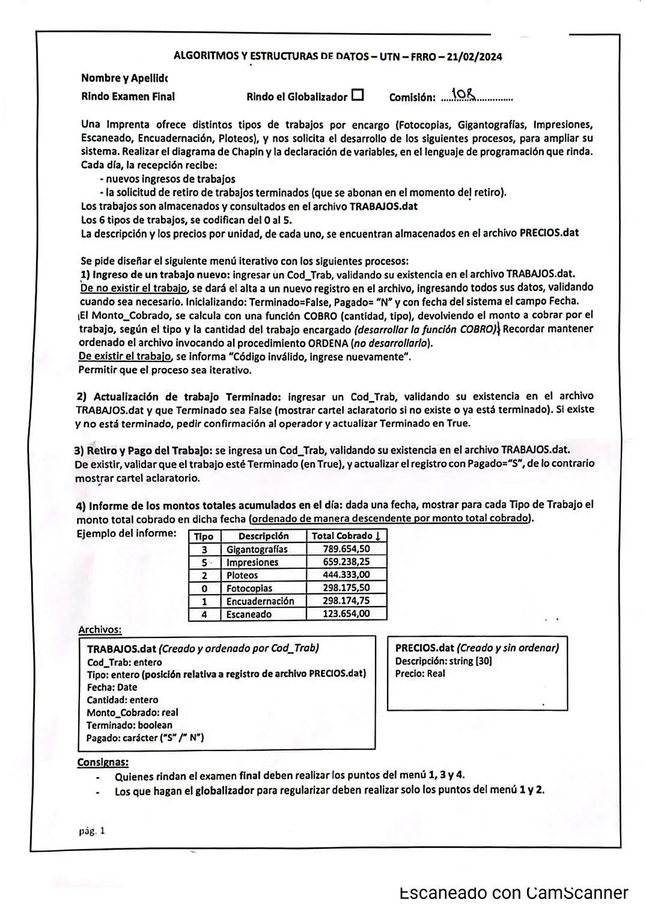

Final y globalizador, 21/02/2024 (Imprenta)
3° parcial y final, 21/02/2024
Enunciado


Propuesta de respuesta
Respuesta no verificada. La propuso Luta Studios con inteligencia artificial y ningún docente la revisó. Puede tener errores.
La hoja pide el diagrama de Chapin. Va un diagrama por módulo, con su declaración de variables arriba, y primero el del programa principal. Si un diagrama no entra en la pantalla, tocalo para verlo completo. Después de los diagramas está el mismo algoritmo en Python, para que lo puedas probar. Las sentencias de archivos van con las palabras reservadas de Python (open, pickle.load, pickle.dump, seek, tell). Los textos se completan con ljust para que los registros midan lo mismo. El tamaño de un registro sale de tell() después de leer el primero.
Menú iterativo
1) Ingreso de un trabajo nuevo
2) Actualización de trabajo terminado
3) Retiro y pago del trabajo
4) Informe de los montos del día, descendente
El mismo algoritmo en Python
Es el programa que se probó, con las mismas sentencias y en el mismo orden que las cajas. Cada Leer del diagrama es un input, convertido a int o float según la declaración, y cada Mostrar es un print.
import os
import pickle
from datetime import date
class Trabajo:
def __init__(self):
self.codTrab = 0
self.tipo = 0
self.fecha = date.today()
self.cantidad = 0
self.montoCobrado = 0.0
self.terminado = False
self.pagado = "N"
class Precio:
def __init__(self):
self.descripcion = ""
self.precio = 0.0
# afTrabajos, afPrecios: str
# alTrabajos, alPrecios: archivo
# tamPre: int
afTrabajos = "TRABAJOS.dat"
afPrecios = "PRECIOS.dat"
alTrabajos = open(afTrabajos, "r+b")
alPrecios = open(afPrecios, "rb")
pickle.load(alPrecios)
tamPre = alPrecios.tell()
def BUSCA_TRABAJO(cod):
# Dicotómica: TRABAJOS.dat está ordenado por Cod_Trab. Devuelve el byte o -1
# cod, tamReg, inicio, fin, medio, pos: int
# reg: Trabajo
pos = -1
if os.path.getsize(afTrabajos) > 0:
alTrabajos.seek(0, 0)
pickle.load(alTrabajos)
tamReg = alTrabajos.tell()
inicio = 0
fin = os.path.getsize(afTrabajos) // tamReg - 1
while inicio <= fin and pos == -1:
medio = (inicio + fin) // 2
alTrabajos.seek(medio * tamReg, 0)
reg = pickle.load(alTrabajos)
if reg.codTrab == cod:
pos = medio * tamReg
elif cod < reg.codTrab:
fin = medio - 1
else:
inicio = medio + 1
return pos
def COBRO(cantidad, tipo):
# cantidad, tipo: int
# pre: Precio
alPrecios.seek(tipo * tamPre, 0)
pre = pickle.load(alPrecios)
return cantidad * pre.precio
def GRABAR(reg, pos):
# reg: Trabajo
# pos: int
alTrabajos.seek(pos, 0)
pickle.dump(reg, alTrabajos)
alTrabajos.flush()
def INGRESO():
# cod: int
# reg: Trabajo
# Fin de datos: código 0
cod = int(input("Cod_Trab (0 para terminar): "))
while cod != 0:
if BUSCA_TRABAJO(cod) != -1:
print("Código inválido, ingrese nuevamente")
else:
reg = Trabajo()
reg.codTrab = cod
reg.tipo = int(input("Tipo (0 a 5): "))
while reg.tipo < 0 or reg.tipo > 5:
reg.tipo = int(input("Tipo inválido: "))
reg.cantidad = int(input("Cantidad: "))
while reg.cantidad <= 0:
reg.cantidad = int(input("Tiene que ser mayor que 0: "))
reg.fecha = date.today()
reg.terminado = False
reg.pagado = "N"
reg.montoCobrado = COBRO(reg.cantidad, reg.tipo)
GRABAR(reg, os.path.getsize(afTrabajos))
ORDENA()
print("Monto a cobrar:", reg.montoCobrado)
cod = int(input("Cod_Trab (0 para terminar): "))
def TERMINADO():
# cod, pos: int
# resp: str
# reg: Trabajo
cod = int(input("Cod_Trab: "))
pos = BUSCA_TRABAJO(cod)
if pos == -1:
print("No existe ese trabajo")
else:
alTrabajos.seek(pos, 0)
reg = pickle.load(alTrabajos)
if reg.terminado:
print("El trabajo ya está terminado")
else:
resp = input("¿Confirma que está terminado? (S/N): ")
while resp != "S" and resp != "N":
resp = input("Responda S o N: ")
if resp == "S":
reg.terminado = True
GRABAR(reg, pos)
def RETIRO():
# cod, pos: int
# reg: Trabajo
cod = int(input("Cod_Trab: "))
pos = BUSCA_TRABAJO(cod)
if pos == -1:
print("No existe ese trabajo")
else:
alTrabajos.seek(pos, 0)
reg = pickle.load(alTrabajos)
if reg.terminado:
reg.pagado = "S"
GRABAR(reg, pos)
print("Cobrar:", reg.montoCobrado)
else:
print("El trabajo todavía no está terminado")
def INFORME():
# total: arreglo [0..5] de float
# tipo: arreglo [0..5] de int
# tam, d, m, a, i, k, auxT: int
# f: date
# auxM: float
# reg: Trabajo
# pre: Precio
total = [0.0]*6
tipo = [0]*6
for i in range(6):
tipo[i] = i
d = int(input("Día: "))
m = int(input("Mes: "))
a = int(input("Año: "))
f = date(a, m, d)
tam = os.path.getsize(afTrabajos)
alTrabajos.seek(0, 0)
while alTrabajos.tell() < tam:
reg = pickle.load(alTrabajos)
if reg.fecha == f:
total[reg.tipo] = total[reg.tipo] + reg.montoCobrado
for i in range(5):
for k in range(i + 1, 6):
if total[i] < total[k]:
auxM = total[i]
total[i] = total[k]
total[k] = auxM
auxT = tipo[i]
tipo[i] = tipo[k]
tipo[k] = auxT
print("Tipo / Descripción / Total cobrado")
for i in range(6):
alPrecios.seek(tipo[i] * tamPre, 0)
pre = pickle.load(alPrecios)
print(tipo[i], pre.descripcion, total[i])
# Programa principal
# opcion: int
opcion = 0
while opcion != 5:
print("1) Ingreso de un trabajo nuevo")
print("2) Actualización de trabajo terminado")
print("3) Retiro y pago del trabajo")
print("4) Informe de los montos del día")
print("5) Salir")
opcion = int(input("Opción: "))
while opcion < 1 or opcion > 5:
opcion = int(input("Opción inválida: "))
match opcion:
case 1:
INGRESO()
case 2:
TERMINADO()
case 3:
RETIRO()
case 4:
INFORME()
alTrabajos.close()
alPrecios.close()Respuesta no verificada. Puede tener errores.
Se armó con la hoja del examen y la página del 3° parcial y final (registros como clase, recorrer, búsquedas, actualizar un registro y alta). Las operaciones de archivos siguen las diapositivas de merge y corte de control. El Chapin sigue la forma de las diapositivas del examen de Historia Clínica de 2019. El tipo como posición relativa en PRECIOS.dat es el que da la hoja.
Quedó en duda: El informe suma el monto de los trabajos cuya fecha es la ingresada, que es la fecha de ingreso. La hoja dice «cobrado en dicha fecha» y el cobro pasa en el retiro. Si se quiere solo lo cobrado, hay que sumar los que tienen Pagado en S. La fecha sigue siendo la de ingreso, porque el registro no guarda otra. ORDENA se invoca y no se programa. La búsqueda es dicotómica porque el archivo está ordenado por Cod_Trab. El fin de datos del ingreso es el código 0. El retiro no controla si el trabajo ya se pagó, porque la hoja no lo pide. En Python, pickle graba un entero menor que 256 en menos bytes que uno más grande. Por eso un trabajo con código o cantidad menor que 256 mide distinto que otro con valores más grandes. Entonces el registro deja de coincidir con la posición que calcula el programa. El material pide registros del mismo tamaño y solo muestra cómo lograrlo con textos (ljust). Las pruebas se hicieron con datos que no cambian el tamaño. Las diapositivas de la materia no muestran en Chapin la lectura de datos ni la selección múltiple. Acá van como Leer y como Según, con una columna por caso.
¿Cómo te fue?
Marcá cada tema del examen.
- ArchivosSecuencial y de acceso directo, en 3° parcial y final
- Posición relativaCómo viene el examen, en 3° parcial y final
- OrdenamientoOrdenamiento, en 2° parcial